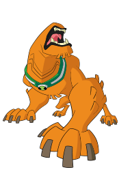
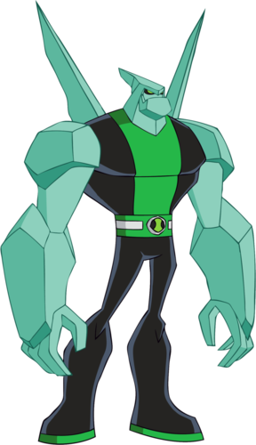

Aliens
Heatblast is a magma-based lifeform whose body is composed of a bright yellow inner magma body covered by a dark red or brown rocks.

Wildmutt appears to be a large orange dog with no eyes, ears, nose, or tail. His posture and movements are also somewhat apelike. His teeth are very defined and stick out of his mouth. Since Wildmutt has no eyes, he uses his sense of smell and hearing to navigate, which are aided by three gill-like nostrils located on each side of his neck.

Being a silicon-based life form, Diamondhead's body is composed of durable pale green crystals. He sports four crystal shards on his back and has a sharp head.
In the original series, Diamondhead wore a uniform that was black on the right half and white on the left with a black patch on the left shoulder where the original Omnitrix symbol was.
XLR8 resembles a semi-armored Velociraptor. He has black orbs on his feet and wears a black conoid helmet with a visor that is part of his Kineceleran biology and is not mechanical, leaving the other features of his head unknown. Whenever the visor does come up, one can see that he has a blue face, green eyes, black lips, and stripes above and on the right side of his eyes. XLR8 has five blue stripes on his tail, and wears black pants and a turtleneck-like shirt with a white stripe on the center.